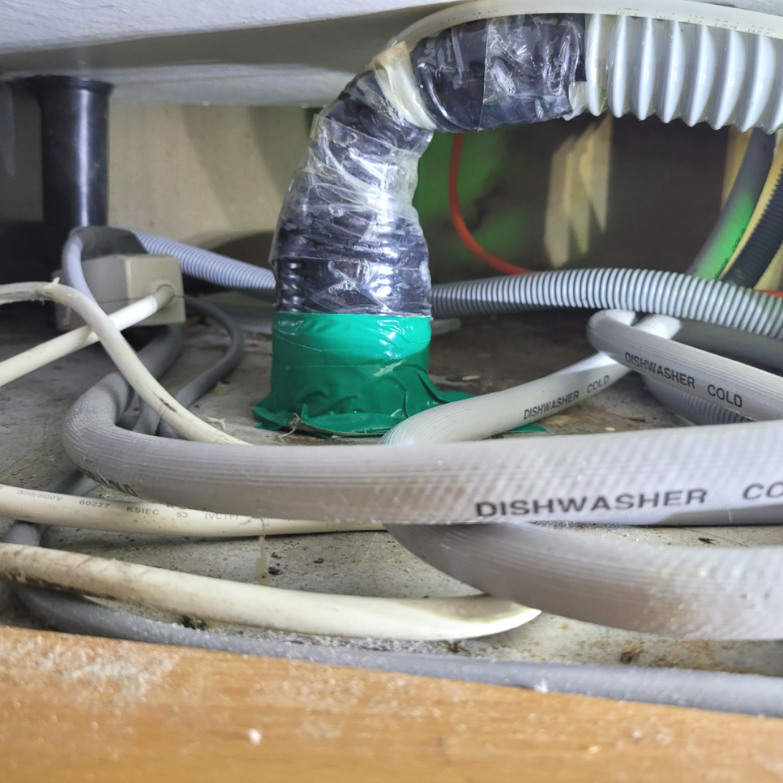
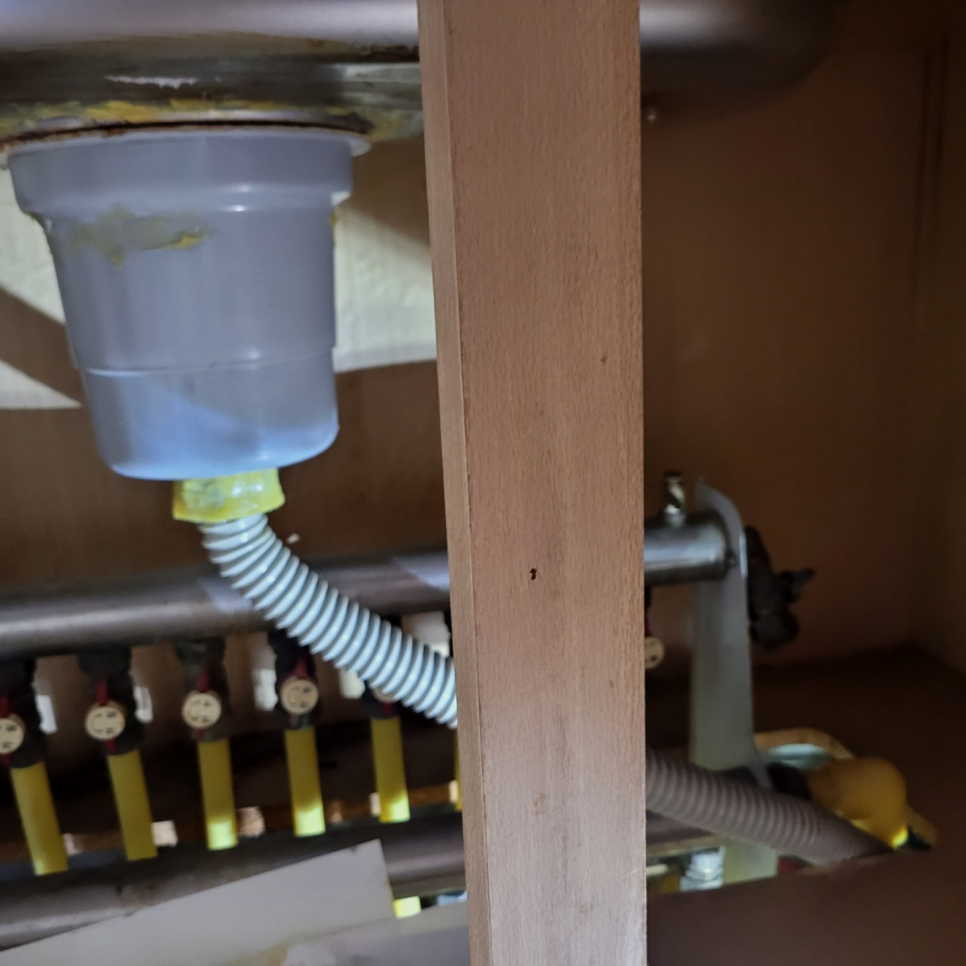
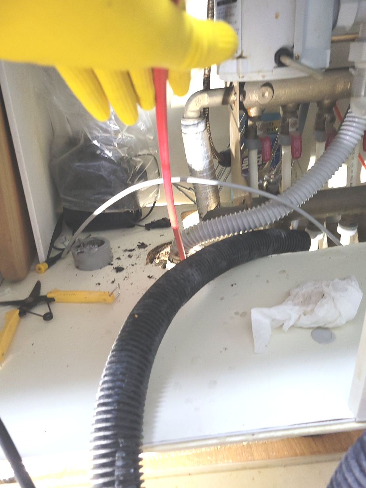
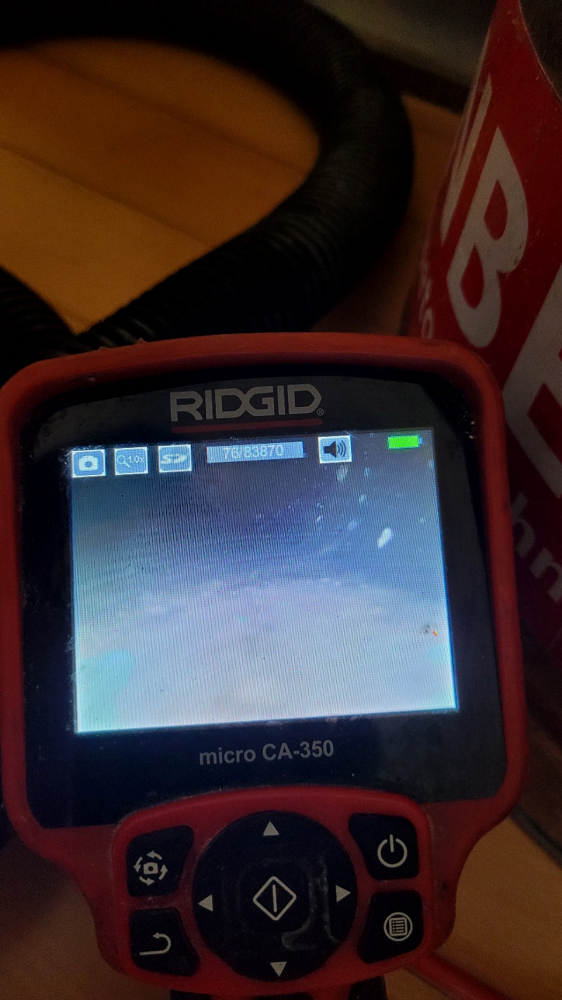
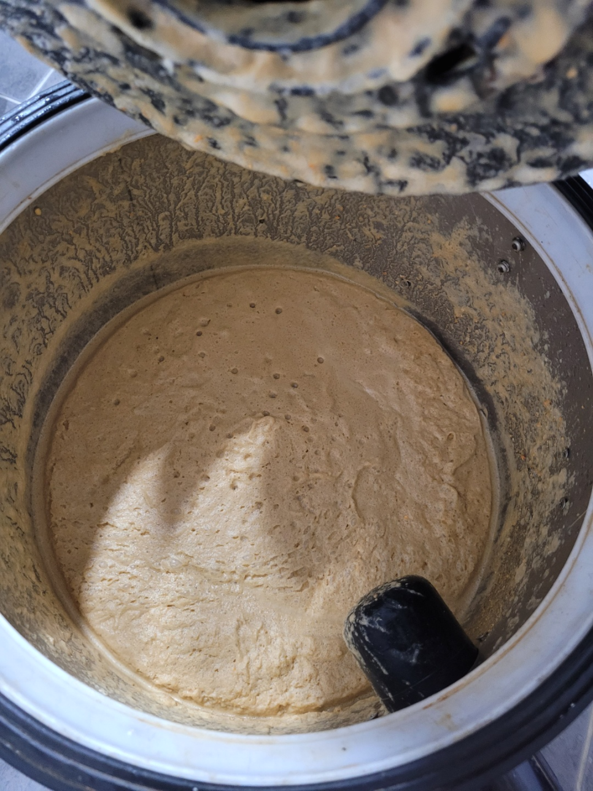
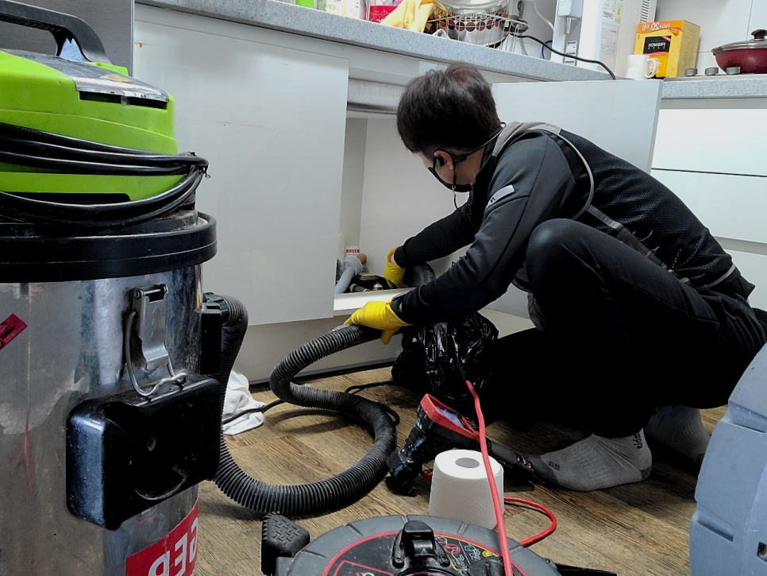

🏠 안성 공도 배수구막힘 역류 싱크대기름때 청소 배관 설비업체
안성 향남 싱크대막힘 전문 시공 후기

📋 작업 개요
- 위치: 안성 향남, 향남, 안성
- 서비스 유형: 싱크대막힘, 변기막힘, 하수구막힘, 배관막힘, 누수수리, 역류해결, 뚫는업체, 배관청소, 고압세척
- 작업 일시: 2023. 11. 15. 23:58
- 업체명: 하수구수사대 (010-5615-2118)
🔍 문제 상황
반갑습니다^^
설비전문업체 "하수구수사대"를 찾아주셔서 감사드려요^^
생활하는데에 없으면 안되는것이 물과 하수관인데요, 우리집을 포함해서 상가등등하수관가 막히게 되면 여간 답답하지 않을수 없습니다.
보이지 않는 배관가 막힌 경우에는 고객님께서는 더욱이 손을 쓸수 없는 상황에 당혹감을 느끼실 수밖에 없게 될 것인데오ㅛ. 이럴때는 혼자서 해결을 하려고 하지 마시고 반드시 배관전문업체를 통해서 해결을 하실 것을 추천드립니다.
단순 막힘 말고도 역류 같은 문제처럼 하수에는 생길 수있는 증상들은 매우 많습니다. 그럴 때 전문 업체를 통해 뚫기도 하지만 저렴한 곳만 알아보시는 것은 오히려 나중에 더 큰 피해를 커울수 있다는 것을 말씀 드리고 싶습니다.

🔎 원인 분석
💡 전문가 진단: 정밀 진단 장비를 사용하여 슬러지의 고착 여부를 판명하고 타격/세척 작업을 실시했습니다.
그래서 어떠한 물질이 퇴수를 막고 있는지를 내시경 카메라를 통해서 확인을 하는 것이 필요합니다. 막혀있는 물질이 무엇이냐에 따라서 작업의 방향이 결정이 되고 또한 어떠한 장비를 사용해야 할지를 판단할 수 있습니다.
가정집에서보다는 음식점 같은 경우는 흘려보내는 빈도수가 더욱 많기 때문에 한번 막히게 되면 제대로 뚫는 것이 필요하다고 할 수 있습니다. 이를 해결하는 방법으로 통수 작업보다는 하수구}배관을 전체적으로 스케일링을 하는 작업을 하는 것이 필요하다고 할 수 있습니다.
고민하실 적에 갖추고 있는 장비에 대해서도 체크해야 합니다. 매장이라거나 큰 건축물에서 배출관뚫음 받아보신 고객의 경우에는 이런 사항들을 궁금해하십니다.
다세대 주택에서는 여러 세대의 사람들이 한 배관을 이용하는 곳인 만큼 불편함을 줄이기 위해서 퇴수구문제를 빠른 해결을 하고자 현장으로 즉시 출동을 하였습니다. 이번 현장을 통해서 배관 막힘을 전문 업체에서는 어떻게 해결을 하게 되었는지를 알려드리도록 하겠습니다.
현장 상황에 알맞는 장비를 확인하는 것도 하수관막힘을 해결할 수 있는 중요한 역량이라고 할 수 있습니다.고압세척 기기를 싱크대 배관 내부로 투입해서 내부에 쌓인 이물질을 제거해 보았습니다.
한번의 고압세척만으로도 일반 가정집 경우 몇년간은 시원한 화성 향남 하수구막힘뚫음으로 막힘 걱정없이 안전하고 쾌적한 생활이 가능하십니다.

🔧 작업 과정
이러한 이물질을 제거하기 위해서는 이물질 및 물을 제거하는 석션기를 이용해야 합니다. 그러고 나서 고압세척을 통해 하수관 내부 깊숙이 있는 덩어리를 제거해 주어야 해요.
다만이같은것들은 대부분의사람들이 쓰시는것이고 깨끗하게 사용하시는분들은 가끔닦으시고 바꾸시기도합니다.이렇게까지하는데도 배수관이막혀버려서 전문설비회사에 전화하시는데요
저희회사는 뚫지못했다면 어떠한금액도 청구하지않고있어요.게다가처리해드리고 사후에도관리를 해드리고있는데요. 하수관막힘이 다시발생되었을땐 잘못된버릇으로 막힌것을제외하고 AS서비스를 하고있어요 또한연락을주신다면 1시간안으로 출동하고있습니다.
배출구막힘 건축물바깥에 배출되지않고 집안쪽에 누수가발생되기에 장판을상하게하면서 아랫세대쪽에도 문제가발생됩니다,다같이이용하는 공동하수관이면 같은건물사람들이 사용하지못하기에 모든부분에서 손해가발생돼요.
세심하게확인하고 상황에따라 작업하고있어서 타업체와 비교할수없는 좋은서비스를 갖추고있습니다.배관저희업체를 안고르셔도 앞서설명 드린것들은 절대로잊으면 안되기에 기억하셔야합니다.확신가능한것은 어떤데든 문제가생겼다면 금방처리 할수있다는점입니다.
이사한 지 얼마 안 돼서 이런 하수막힘이 발생해 착잡한 심정이었던 인천 서구 씽크대뚫음 고객님을 위해 빨리 해결을 하고자 내시경 장비부터하수 배관 속에 넣어 안을 살펴보았습니다.
배관 관리 방법, 청소방법 등을 알려드리는 저희들은 부담 없는 가격과 친절한 서비스로 배출구배관 케어를 도와드립니다. 나에게 꼭 필요하던 서비스로 더욱 나은 주방을 만들어보세요.
그래서 전문설비업체의 도움이 꼭 필요한 것입니다. 확실하지 않은 이유와 장비로 뚫으려고 한다면 상황은 더 악화되며 배수구막힘이 심해지고 해결이 된다는 보장도 없지만 처음부터 전문 장비의 도움을 받으며 작업하게 되면 빠른 뚫음은 물론이거니와 막힌 변기도 바로 시원하게 사용이 가능해질 테지요.


✅ 작업 완료
이렇게 돼 버린다면 아까운 돈만 배로 들어가게 되어 더욱 골치가 아파지실 텐데요배수막힘 이런 비슷한 사례를 사전에 막기 위해서는 확인하셔야 할 사항들이 한두 가지가 아닙니다. AS 서비스도 중요합니다.
막힌 배수를 내시경으로 정밀한 진단을 진행한 뒤에 그에 대해서 설명을 해드리면서 배수막힌 부분을 뚫어드리고 있습니다. 도움이 필요하시다면 요일 상관없이 언제든지 편안하게 문의를 해주시면 현장으로 1시간 내로 달려가 문제 있는 배수 막힘을 해결해 드리겠습니다!
#하수구막힘 #하수구뚫음 #하수구역류 #씽크대막힘 #싱크대역류 #오수관막힘 #하수구청소 #욕실하수구막힘 #변기막힘 #하수구뚫는비용 #싱크대수리 #화장실막힘




⚠️ 베란다 누수 및 방수 관리 방법
- ✅ 비가 많이 올 때 창틀 주변이나 아래층 천장에 얼룩이 생기는지 정기적으로 확인해 보세요.
- ✅ 우수관 주변 실리콘 마감이 들뜨거나 깨진 틈새가 있는지 손상 여부를 수시로 체크하세요.
- ✅ 베란다 바닥 타일의 줄눈(메지)이 소실되면 그 틈으로 물이 침투하여 누수가 유발됩니다.
- ✅ 누수 의심 증상 발견 시 방치하면 아래층 손실이 커지므로 즉시 전문가의 진단을 받으십시오.
💡 핵심 정리
- 확실한 장비 작업(내시경 점검 및 샤프트 스케일링)으로 원인을 뿌리 뽑습니다.
- 작업 후 1년 이내에 동일한 부위 재발 시 100% 무상 A/S 서비스를 보장합니다.
- 서울 · 경기 · 인천 전 지역에 24시간 언제든 긴급 출동할 수 있도록 항시 대기 중입니다.
❓ 자주 묻는 질문 (FAQ)
🚨 안성 향남 싱크대막힘 문제로 고민이신가요?
정확한 원인 진단과 확실한 시공으로 재발 없는 해결을 약속드립니다.
24시간 긴급 출동 | 서울 · 경기 · 인천 전지역 | 1년 내 재발 시 무상 A/S